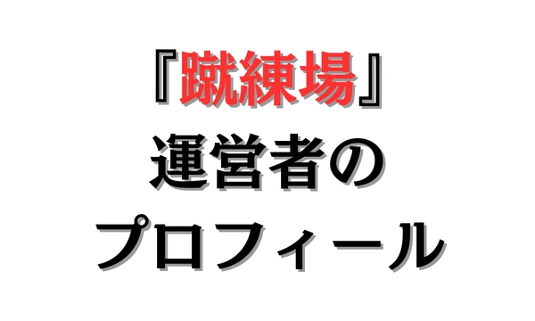

【プロフィール】Thirteen


1. 『Thirteen』のプロフィール
■名前：Thirteen
■年齢：21歳（2003年生まれ）
■職業：大学生
■出身：神奈川
■好きなサッカー選手：ジョアン・ペドロ（ブライトン/プレミアリーグ）
2. これまでの経歴は？
小学生時代
地元（神奈川県）のサッカークラブに入団（小1）。
市トレセン、県トレセン（活動は県西ブロック）に選ばれ、そこでの活動が評価され横浜Fマリノスのジュニアユース練習会に招待されるも合格することはできませんでした。
中学生時代
神奈川県のトップリーグ（現1部リーグ）に所属するジュニアユースクラブに入団。
リーグではトップリーグ残留で関東リーグには昇格出来ず、高円宮杯やクラブユースでもベスト８までしか行けませんでした。
高校生時代
神奈川県の2部リーグに所属する私立高校のサッカー部に入部。下のカテゴリーからスタートし、1年生の秋頃からトップチームの練習に参加するようになる。
なぜか勉強にハマり、1年生の2月ごろ大学受験のためサッカー部を退部する。
予備校に通わせてもらうも1、2年時はバイト漬けの日々で定期テストしか勉強しないような生活を送っていました。
3年になるとバイトも辞め受験勉強に専念するも、早稲田に落ち、浪人を決める。
志望校を国立に替え、数学も理科基礎も勉強し始める。
最終的に金沢大学に合格し、進学を決める。
大学生時代（現在）
サッカー部に入部するも鎖骨の骨折を2回、腰の怪我（中学生のころから慢性的に継続していた）により休部し、HTML,CSS,JavaScriptの勉強を始め、このサイトを作る。
3. なぜこのサイトを作ったの？
食事や筋トレ、進路やトレーニング方法など「指導者的視点」を選手時代に知るべきだったという後悔、同じような思いをしてほしくないという考えでこのサイトを作りました。
「もっと早く知りたかった」と感じた情報を発信しています。
SNSのフォローもよろしくお願いいたします。
インスタ：蹴練場
4. まとめ
- サッカーでは大した結果を残せず。
- 勉強でも中途半端な結果に。
- 「指導者的視点」、「もっと早く知りたかった」と感じた情報を発信するためこのサイトを作成しました。
このサイトでは、チーム練習と個人練習の2つに分けて、厳選された練習メニューをまとめています。
悪い意味での「伝統的な練習」への疑問。ただボールを蹴るだけの自主練。敗れる理由もわからない無策のチーム。
そんな悩みを解決するためにこのサイトを作り上げました。
蹴練場は日本全国のサッカーファミリーを応援しています。